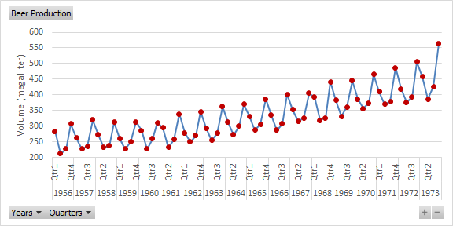
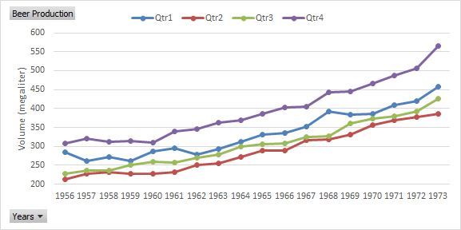

Task: Australian beer production
As an example of a time series, the beer production (in megaliters) in Australia for the years 1956-1973 will be observed and analysed.
- Open the practice file.
-
Select a cell in the table and then choose tab Insert > PivotChart (group Charts) > PivotChart > OK
An empty pivot table and chart is created in a new worksheet.
-
Add field Volume to area Values and
field Date to area Axis
(Categories).
In addition to the Date field, the Years and Quarters fields are also created. And the chart is a column chart with columns for each year.
- Change the chart type in Line with Markers.
-
Select a year in the pivot table. Then right mouse click and choose from the
context menu Expand/Collapse > Expand Entire Field
Both in the pivot table and pivot chart, the years are divided into quarters. In principle, the time series is now ready. However, the layout can be improved.
-
Make the following changes to the layout.
- In the PivotChart Fields List, remove field Date from the Axis area.
- In the pivot table, change "Sum of Volume" to "Beer Production", in the top right cell. That will change the label at the top left of the pivot chart.
- Scale Y-axis from 200 to 600 with increments 50.
- Add a title to the Y-axis.
- Remove legend and chart title.
- Make the line a little thinner and give the markers a different color than the line.
- Adjust the dimensions if necessary.
Figure 1: Australian beer production (megaliters) per quarter In the chart you can see the following characteristics:- There is an upward trend, may not be a straight line but slightly bent.
- There is a strong seasonality through the regular peaks and troughs related to the different quarters. The peaks are always in quarter 4, the valleys at the quarters 2 and 3 and the values for quarter 1 are between peak and valley.
- There are no outliers.
- There is no long term cycle.
- The variance in the values seems to increasing a little over time.
To get a clearer picture of the seasonality, the graph is changed so that the data for each year is plotted against the individual quarters.
- In the PivotChart Fields List, drag the Years field from the Axis area into the Legend (Series) area.
-
In the pivot chart:
- Add a legend to the Top
- Right-click the Legend: Format Legend > Uncheck the option to Show the legend without overlapping the chart.
- Right-click on the Legend button and choose: Hide Legend Field buttons on Chart.
- Drag the Legend to a better position, so it doesn't cover the lines.
Figure 2: Yearly Australian beer production (megaliters) per quarter The seasonality is evident.
To study the behavior per quarter, the data for each quarter is plotted against the years.
-
In the PivotChart Fields List, swap the fields Years and
Quarters, so Years is in the
Axis area and Quarters in the
Legend (Series) area.
Figure 3: Quarterly beer production per year in Australia Now you can see that the increasing trend is evident for each quarter.